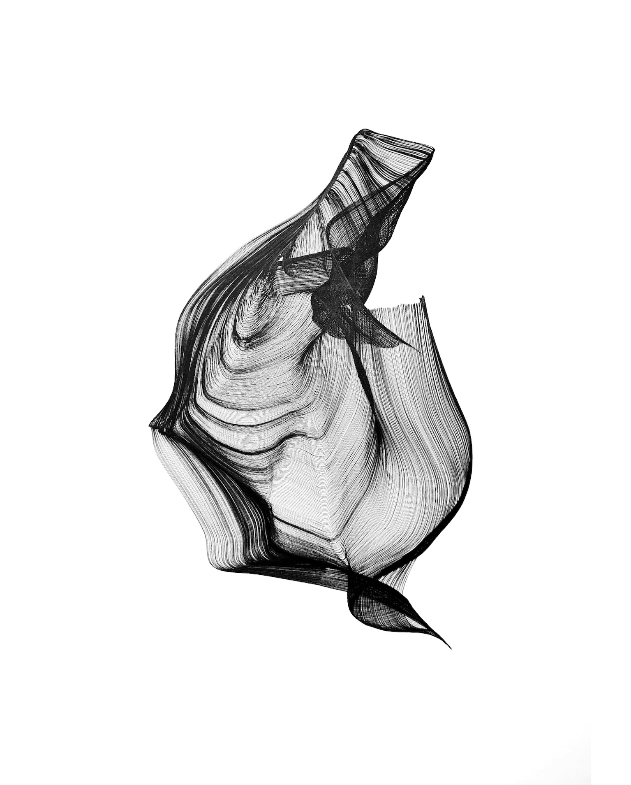

Home
About
"Maître de conférences" (~associate professor) in LaBRI and a member of the LX team.
My research interests lie mainly at the interface between algorithms, complexity theory and machine learning.

Contact
Office: 316, 3rd floor in LaBRI
E-mail: guillaume.lagarde [at] labri [dot] fr
Phone number: +33 (0)5 40 00 35 29
Postal address: LaBRI, Université de Bordeaux, 351, cours de la Libération, F-33405 Talence Cedex - France
Short Bio
- 2021 - 2023: Research Engineer at Criteo.
- 2019 - 2021: Postdoc at LaBRI, Bordeaux, in the DeepSynth CNRS Momentum project, with Nathanaël Fijalkow.
- 2018 - 2019: Postdoc in the Approximation and Proof Complexity group at KTH Royal Institute of Technology, hosted by Jakob Nordström, Johan Håstad, and Per Austrin.
- 2015 - 2018: PhD candidate at IRIF (University Paris Diderot), supervised by Sophie Laplante and Sylvain Perifel. Thesis Manuscript.